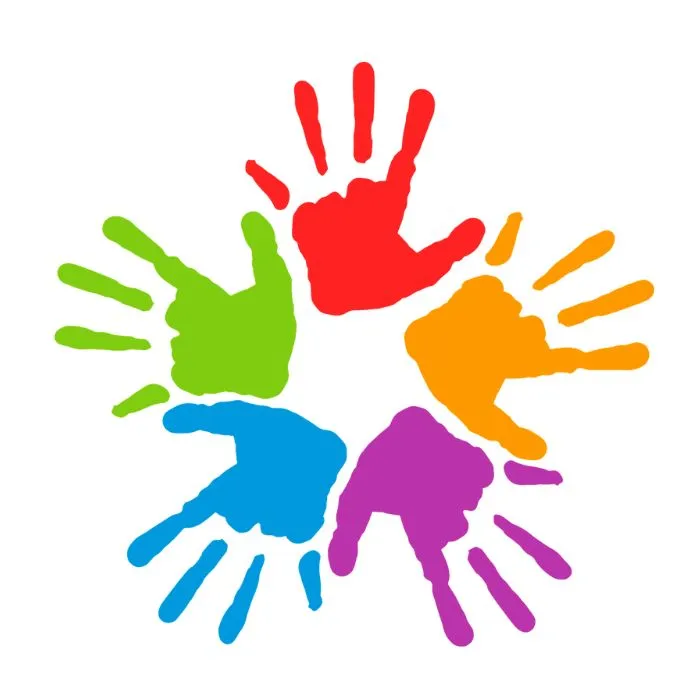

The name "Manos Solidarias" was chosen to reflect the spirit of solidarity and collaboration in the community. "Manos" (hands) represents the idea of helping and supporting others, while "Solidarias" highlights the importance of mutual aid and social responsibility. The name is intended to convey the mission of the site to promote volunteerism and community development.
This site serves as a hub for social responsibility, promoting volunteerism and community development through various initiatives.
Promote the spirit of collaboration and mutual aid through volunteer projects that have a positive impact on the community.
To be a benchmark for community work, where each volunteer feels that their contribution generates real change.
A community-driven initiative focused on volunteer work and mutual aid.
You can participate by registering as a volunteer or donating to our causes.
Primary Color: #005f73 (Used for headers, buttons, and accents)
Secondary Color: #e0e0e0 (Used for the background)
Font Family: 'Lora', serif (Used for body text and headings)
Headings: Bold, 700 weight
Body Text: Regular, 400 weight
Wireframe for mobile and desktop views: